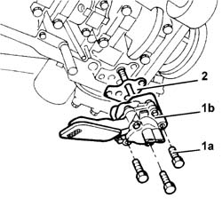

1084B10 engine oil pump - r + r with crankcase sump removed
- Path
- Procedures > 10 ENGINE > 1084 ENGINE LUBRICATION > 1084B ENGINE OIL LUBRICATION CIRCUIT > 1084B10 engine oil pump - r + r with crankcase sump removed
- Kind
- repair procedure (removal / refitting; the operation number is the code)
- Applies to
- all engines; all production periods
- Interactive page
- https://sloeber94.github.io/elrnDB-fDbl/en/#/2584372
Applies to: all engines; all production periods
 Removing
Removing
 Refitting
Refitting1. Undo the bolts (1a) and remove the engine oil pump (1b), complete with intake.
2. Remove the gasket.

Applies to: all engines; all production periods
Refitting
RemovingPlace the gasket back in its housing.
Place the engine oil pump, complete with intake, back in its housing and secure it tightening the bolts to the recommended torque.
 | Fastening | Component | Ø | Value (daNm) |
|---|---|---|---|---|
- | Bolt | ENGINE OIL PUMP | M8 | 2.5 |